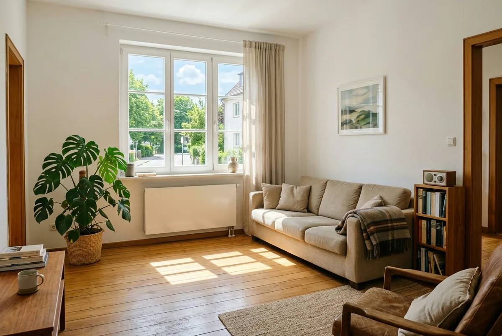
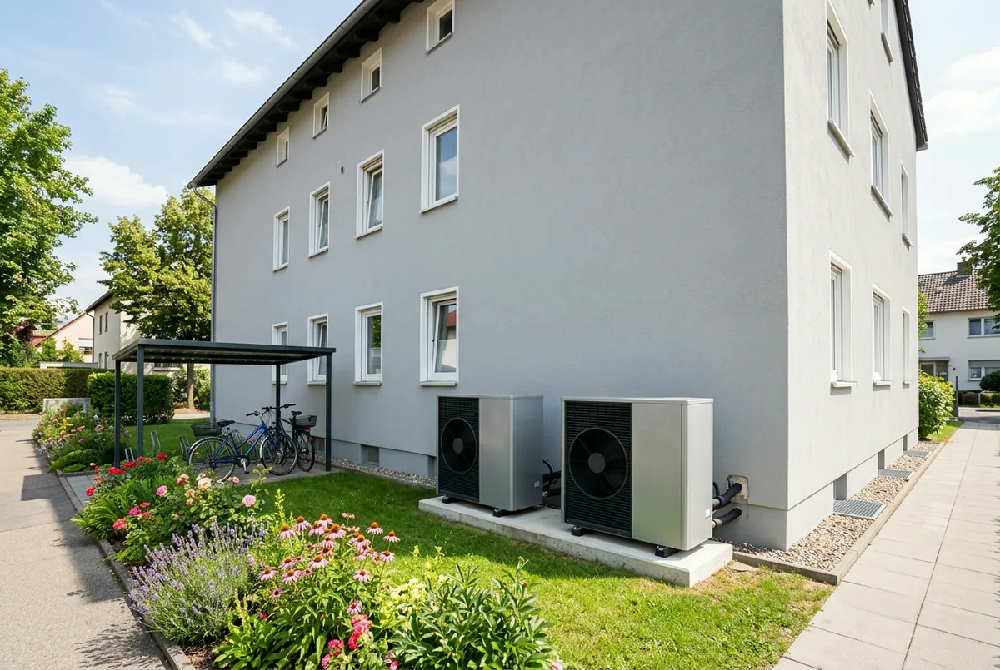

Inhaltsverzeichnis
- Was sich am 21. Juli geändert hat
- Alle Bausteine im Überblick
- Grundförderung: 30 Prozent
- Klimageschwindigkeitsbonus: 16 Prozent
- Einkommensbonus und Familienzuschlag
- Die entfallenen Boni
- Höchstkosten und Fördersatz-Deckel
- Kompaktes Rechenbeispiel
- Warum Ratgeber alte Zahlen zeigen
- Übergangsregelung und Bestandsschutz
- Fazit und Handlungsempfehlung
- Kurz und direkt beantwortet
- Häufige Fragen
Das Wichtigste in Kürze
- Der Sockel bleibt: Die Grundförderung von 30 Prozent ist unverändert und hängt weder am Einkommen noch an der Selbstnutzung.
- Klimageschwindigkeitsbonus 16 Prozent: gesenkt von 20 Prozent, ab dem 1. Februar 2027 halbjährlich minus 4 Prozentpunkte, ab dem 1. August 2028 entfällt er.
- Einkommensbonus gestaffelt: 40, 30 oder 10 Prozent je nach zu versteuerndem Haushaltsjahreseinkommen. Die Stufen schließen einander aus.
- Zwei Boni sind weg: Der Effizienzbonus von 5 Prozent und der Emissionsminderungszuschlag von 2.500 Euro entfallen.
- 28.000 Euro und 80 Prozent: Förderfähig sind für die erste Wohneinheit 28.000 Euro, der Deckel liegt bei 70 Prozent, bei 80 nur bis 30.000 Euro zvE.
- Familienzuschlag einmalig: 10.000 Euro weniger anzusetzendes Einkommen, unabhängig von der Zahl der Kinder, nicht je Kind.
Was am 21. Juli 2026 mit den Boni passiert ist
Die Reform vom 21. Juli 2026 hat an allen vier Elementen des Heizungszuschusses angesetzt: an der Grundförderung, an den Boni, am Deckel für den Fördersatz und an den förderfähigen Höchstkosten. Der Heizungszuschuss der KfW ist eine Summe aus Bausteinen: einer Grundförderung für alle, dazu Boni mit persönlichen Voraussetzungen. Darüber liegen zwei Grenzen, ein Deckel für den Fördersatz und ein Höchstbetrag für die Kosten.
Seit dem 21. Juli 2026 setzt sich der Heizungszuschuss so zusammen: 30 Prozent Grundförderung, dazu ein Klimageschwindigkeitsbonus von 16 Prozent und ein Einkommensbonus von 10 bis 40 Prozent. Der frühere Effizienzbonus von 5 Prozent und der Emissionsminderungszuschlag von 2.500 Euro sind entfallen. Insgesamt sind maximal 70 Prozent möglich, und 80 Prozent für selbstnutzende Eigentümer mit einem zu versteuernden Haushaltsjahreseinkommen bis 30.000 Euro. Maßgeblich ist die Richtlinie BEG EM vom 17. Juli 2026, in Kraft seit dem 21. Juli 2026.
Zuständig ist für den Heizungstausch die KfW mit dem Programm 458, für Gebäudehülle, Anlagentechnik und Heizungsoptimierung das BAFA. Das wird gleich bei einem der entfallenen Boni wichtig. Den Gesamtüberblick liefert unser Beitrag zu den Änderungen der BEG-Reform 2026.
Die Bausteine im Überblick: Höhe, Anspruch, Änderung
Den Heizungszuschuss bestimmen seit dem 21. Juli 2026 vier Größen (Grundförderung, Klimageschwindigkeitsbonus, Einkommensbonus und Familienzuschlag), während Effizienzbonus und Emissionsminderungszuschlag entfallen sind. Für jeden Baustein die heutige Höhe, der Kreis der Berechtigten und die Änderung durch die Reform:
| Baustein | Höhe seit 21.07.2026 | Wer ihn bekommt | Was sich geändert hat |
|---|---|---|---|
| Grundförderung | 30 % | Alle Antragsteller, auch Vermieter | Unverändert. Für Wärmepumpen ab Quartal 1 2027 nur 15 %, dafür ein Wertschöpfungs-Bonus. |
| Klimageschwindigkeitsbonus | 16 % | Nur Selbstnutzer, nur für die selbstgenutzte Wohneinheit | Von 20 auf 16 % gesenkt; ab 01.02.2027 halbjährlich minus 4 Prozentpunkte, ab 01.08.2028 entfällt er. |
| Einkommensbonus | 40 %, 30 % oder 10 % | Selbstnutzer mit einem zvE bis 50.000 € – es sei denn, der Familienzuschlag senkt das anzusetzende Einkommen wieder unter diese Grenze | Der Bonus ist heute dreistufig und exklusiv; ältere Darstellungen weisen ihn teilweise als pauschalen Satz aus. |
| Familienzuschlag | 10.000 € weniger anzusetzendes Einkommen | Haushalte mit mindestens einem kindergeldberechtigten Kind unter 18 | Einmalig, nicht je Kind; verschiebt die 80-%-Grenze auf 40.000 €. |
| Effizienzbonus | entfallen | – | Ersatzlos gestrichen. |
| Emissionsminderungszuschlag | entfallen | – | Statt 2.500 € pauschal jetzt Heizungsoptimierung zur Emissionsminderung, 50 %, beim BAFA. |
| Höchstkosten (1. Wohneinheit) | 28.000 € | Alle Antragsteller | Gesenkt; sinkt ab 01.02.2027 halbjährlich um 750 €. |
| Fördersatz-Deckel | 70 %, bei zvE bis 30.000 € 80 % | Höherer Deckel nur für Selbstnutzer | Vorher pauschal 70 %; die 80-%-Stufe ist neu. |
Wichtig: Die Prozentsätze gelten für die förderfähigen Kosten bis zur Höchstgrenze, nicht für die Rechnungssumme, und die Boni werden am Deckel gekappt.
Grundförderung: 30 Prozent, mit Ablaufdatum für Wärmepumpen
Die Grundförderung ist der einzige Baustein, den die Reform inhaltlich unangetastet gelassen hat: 30 Prozent der förderfähigen Kosten, für alle förderfähigen Heiztechniken gleichermaßen. Sie hängt weder am Einkommen noch an der Selbstnutzung, auch wer vermietet, bekommt den Sockel, die beiden großen Boni dagegen nicht.
Für Wärmepumpen hat dieser Sockel allerdings ein Ablaufdatum. Ab dem 1. Quartal 2027 sinkt die Grundförderung für elektrisch angetriebene Wärmepumpen von 30 auf 15 Prozent; gleichzeitig kommt ein Wertschöpfungs-Bonus von 15 Prozentpunkten für Geräte mit Ursprung in der Union hinzu. Für ein EU-Gerät bleibt es rechnerisch bei 30 Prozent, ohne EU-Ursprung halbiert sich der Sockel. Wie dieser Ursprung nachzuweisen sein wird, regelt laut Richtlinie das Infoblatt zu den förderfähigen Maßnahmen, zum Redaktionsschluss ist es noch nicht angepasst. Ein taggenaues Datum nennt die Richtlinie ebenfalls nicht, nur „ab Quartal 1 2027“. Wer der Umstellung sicher zuvorkommen will, sollte den Antrag bis Ende 2026 stellen.
Ebenfalls ab dem 1. Quartal 2027 greift eine Sperre, die in Bonus-Übersichten untergeht: Ein neuer Wärmeerzeuger wird nicht mehr gefördert, wenn das Gebäude bereits mit einer Anlage nach Nummer 5.3 Buchstabe a bis f oder j versorgt wird, die seit dem 1. Januar 2008 in Betrieb genommen wurde. Ausgenommen bleibt der Ersatz fossiler Erzeuger in bivalenten Systemen.
Klimageschwindigkeitsbonus: 16 statt 20 Prozent
Der Klimageschwindigkeitsbonus liegt seit dem 21. Juli 2026 bei 16 Prozent. Das ist die Änderung, die am meisten Geld kostet und am häufigsten falsch zitiert wird. Jede Angabe von 20 Prozent bezieht sich auf den Stand bis zum 20. Juli 2026.
Ihn erhalten nur selbstnutzende Eigentümerinnen und Eigentümer und nur für die selbstgenutzte Wohneinheit, im Mehrfamilienhaus nur anteilig. Voraussetzung ist der Austausch einer funktionstüchtigen Altanlage: bei Öl-, Kohle-, Gas-Etagen- und Nachtstromspeicherheizungen unabhängig vom Alter, bei Gas- und Biomasseheizungen erst nach 20 Jahren seit Inbetriebnahme, Stichtag ist die Antragstellung. Die alte Heizung muss fachgerecht demontiert und entsorgt werden.
Neu ist eine Erleichterung: Für den Bonus muss eine Biomasseheizung nicht mehr mit einer weiteren Anlage kombiniert werden. Die Antragstechnik war dazu nach Angaben der KfW noch nicht überall angepasst.
Die zweite Hälfte der Änderung ist der Zeitplan: Der Bonus sinkt erstmals zum 1. Februar 2027 und danach halbjährlich um 4 Prozentpunkte, ab dem 1. August 2028 entfällt er vollständig. Maßgeblich ist der Zeitpunkt der Antragstellung, nicht der Einbau. Den vollständigen Fahrplan zeigt der Beitrag zum Klimageschwindigkeitsbonus und seiner Degression.
Einkommensbonus: drei Stufen statt einer Einkommensgrenze
Der Einkommensbonus hängt am zu versteuernden Haushaltsjahreseinkommen (zvE) (der Zahl aus dem Steuerbescheid, nicht am Brutto) und ist heute dreistufig. Hier liegen alte und neue Darstellungen am weitesten auseinander:
- bis 30.000 Euro zvE: 40 Prozent
- über 30.000 bis 40.000 Euro: 30 Prozent
- über 40.000 bis 50.000 Euro: 10 Prozent
- ab 50.001 Euro: kein Einkommensbonus – es sei denn, der Familienzuschlag senkt das anzusetzende Einkommen wieder unter diese Grenze.
Die Stufen schließen einander aus, es gilt immer nur die zutreffende. Wer irgendwo einen pauschalen Einkommensbonus ohne Stufen liest, liest eine Darstellung, die nicht mehr dem Richtlinienstand vom 21. Juli 2026 entspricht. Wie der Klimageschwindigkeitsbonus gilt auch dieser Bonus nur für Selbstnutzer und nur für die Haupt- oder alleinige Wohneinheit.
Der Familienzuschlag ist ein Rechenschritt davor
Er ist kein eigener Prozentsatz, sondern senkt das anzusetzende Einkommen: Lebt mindestens ein Kind im Haushalt der selbstgenutzten Wohnung, das bei Antragstellung noch nicht 18 ist, dort mit Haupt- oder alleinigem Wohnsitz gemeldet ist und für das Kindergeldberechtigung besteht, reduziert sich das anzusetzende zvE pauschal und einmalig um 10.000 Euro.
Einmalig ist der Punkt, an dem sich die meisten verrechnen: Der Zuschlag wird unabhängig von der Zahl der Kinder genau ein Mal gewährt. Dafür wirkt er doppelt. Er kann eine Stufe beim Einkommensbonus heben und die 80-Prozent-Grenze auf 40.000 Euro verschieben. Details im Beitrag zu Einkommensbonus und Familienzuschlag.
Effizienzbonus und Emissionsminderungszuschlag: was weg ist
Der Effizienzbonus von 5 Prozent und der Emissionsminderungszuschlag von 2.500 Euro sind seit dem 21. Juli 2026 nicht gekürzt, sondern gestrichen: zwei Bausteine, die in älteren Kalkulationen noch auftauchen.
Der Effizienzbonus von 5 Prozent ist entfallen. Ältere Ratgeber weisen ihn für Wärmepumpen mit Erdreich, Wasser oder Abwasser als Wärmequelle aus. In der geltenden Richtlinie und im KfW-Merkblatt 458 kommt der Begriff nicht mehr vor. Wer ein Angebot mit eingerechnetem Effizienzbonus hat, sollte neu rechnen: Bei 28.000 Euro förderfähigen Kosten fehlen sonst 1.400 Euro. Bemerkenswert ist die Richtung dahinter, was früher ein Bonus war, wird zur Pflicht: Ab dem 1. Januar 2028 werden nur noch Wärmepumpen mit natürlichen Kältemitteln gefördert.
Der pauschale Emissionsminderungszuschlag von 2.500 Euro ist ebenfalls entfallen. An seine Stelle ist etwas anderes getreten, und zwar nicht im Heizungszuschuss, sondern eine Tür weiter: Maßnahmen zur Emissionsminderung werden jetzt als Heizungsoptimierung zur Emissionsminderung mit 50 Prozent gefördert. Das ist eine Einzelmaßnahme und damit ein BAFA-Vorgang: zwei Anträge bei zwei Stellen, mit eigenen Fristen und Höchstkosten. Welche Maßnahme wo liegt, ordnet unser Vergleich KfW oder BAFA: Fördermittel für die Sanierung ein.

Höchstkosten und Deckel: die zwei Grenzen über den Boni
Erste Grenze: die Höchstkosten. Der Fördersatz gilt nicht für die Rechnungssumme, sondern für die förderfähigen Kosten, gedeckelt auf 28.000 Euro für die erste Wohneinheit, je 15.000 Euro für die zweite bis sechste, je 8.000 Euro ab der siebten. Alles darüber tragen Sie selbst. Auch diese Grenze sinkt: ab dem 1. Februar 2027 auf 27.250 Euro und danach halbjährlich um 750 Euro, bis ab dem 1. August 2030 22.000 Euro erreicht sind.
Zur Abgrenzung: Die oft genannten 30.000 Euro gehören nicht zur Heizung, sondern zu den Einzelmaßnahmen an Gebäudehülle und Anlagentechnik, wo sie sich mit iSFP-Bonus sogar verdoppeln. Was dort gilt, steht im Beitrag zur Förderung von Dämmung und Gebäudehülle.
Zweite Grenze: der Fördersatz-Deckel. Er hängt allein vom zvE ab: Bis 30.000 Euro sind 80 Prozent möglich, darüber 70 Prozent; mit Familienzuschlag verschiebt sich die Grenze auf 40.000 Euro. Der Deckel gilt je Wohneinheit. Daraus folgt das Maximum für ein Einfamilienhaus: 80 Prozent von 28.000 Euro sind 22.400 Euro. Ein Satz wie „jeder bekommt bis zu 80 Prozent“ ist damit doppelt falsch. Er gilt weder oberhalb der Einkommensgrenze noch für Vermieter.
Was die Bausteine zusammen ergeben: zwei Fälle
Dieselben Bausteine ergeben für dasselbe Einfamilienhaus je nach Einkommen 12.880 Euro oder 22.400 Euro Zuschuss. Zugrunde liegt eine Beispielrechnung für ein selbstgenutztes Einfamilienhaus: Eine 22 Jahre alte, funktionstüchtige Gasheizung wird gegen eine Luft-Wasser-Wärmepumpe getauscht, die förderfähigen Kosten betragen 28.000 Euro und entsprechen genau der Höchstgrenze, der Antrag wird zwischen dem 21. Juli 2026 und dem 31. Januar 2027 gestellt. Die Euro-Beträge sind aus den belegten Sätzen abgeleitet.
| Fall | zvE des Haushalts | Grundförderung | Klimageschwindigkeitsbonus | Einkommensbonus | Summe rechnerisch | Deckel | Zuschuss | Eigenanteil |
|---|---|---|---|---|---|---|---|---|
| A | über 60.000 Euro | 30 % | 16 % | – | 46 % | 70 % (nicht erreicht) | 12.880 Euro | 15.120 Euro |
| D | bis 30.000 Euro | 30 % | 16 % | 40 % | 86 % | 80 % (greift) | 22.400 Euro | 5.600 Euro |
Zwischen beiden Fällen liegen 9.520 Euro, bei identischer Anlage und identischer Rechnung. Fall D zeigt zugleich, dass der Deckel keine theoretische Größe ist: Von den rechnerischen 86 Prozent werden 80 ausgezahlt. Weitere Varianten rechnet das Rechenbeispiel zur Wärmepumpen-Förderung 2026 durch, die Gesamtkosten nach Abzug der Förderung der Beitrag zur Kostenberechnung im Altbau.
Die entscheidende Frage lautet selten „wie hoch ist Bonus X“, sondern: Welche Bausteine kommen in meinem Fall überhaupt zusammen? Das hängt an Details, ob die Altanlage funktionstüchtig und alt genug ist, ob die Wohneinheit als selbstgenutzte Hauptwohnung zählt, ob das Angebot nur förderfähige Positionen enthält. Genau diese Kombination prüfen wir für Sie, herstellerneutral und bezogen auf Ihr Angebot, bevor unterschrieben wird.
Welche Boni kommen in Ihrem Fall zusammen?
Wir prüfen herstellerneutral, welche Bausteine Sie tatsächlich beanspruchen können und ob Ihr Angebot dazu passt, bevor Sie unterschreiben.
Kostenlose Erstberatung sichernWarum viele Ratgeber noch falsche Zahlen zeigen
Auch Ratgeberseiten mit „2026“ im Titel zeigen weiter den Zahlensatz von vor der Reform, weil sie seit dem 21. Juli 2026 nicht überarbeitet wurden. Das ist kein Randproblem. Eine reichweitenstarke Anbieterseite zum Thema trug bei unserer Prüfung im Juli 2026 einen Redaktionsstand vom 2. Februar 2026 und nannte ausnahmslos die alten Werte: 20 Prozent Klimageschwindigkeitsbonus, 5 Prozent Effizienzbonus, pauschal 30 Prozent Einkommensbonus, 70 Prozent Deckel, 30.000 Euro Höchstkosten. Selbst eine von behördlicher Seite verlinkte Förderübersicht trug zum Redaktionsschluss noch den Stand 1. März 2025.
So erkennen Sie einen veralteten Stand in zehn Sekunden. Jede dieser Angaben stammt aus der Zeit vor dem 21. Juli 2026:
- 20 Prozent Klimageschwindigkeitsbonus statt 16 Prozent
- ein Effizienzbonus von 5 Prozent
- 2.500 Euro Emissionsminderungszuschlag für Biomasseheizungen
- ein Einkommensbonus, der ohne Stufen als ein einziger Prozentsatz dargestellt wird
- 30.000 Euro Höchstkosten für die Heizung statt 28.000 Euro
- ein Fördersatz von höchstens 70 Prozent ohne die 80-Prozent-Stufe
- ein Maximalzuschuss von 21.000 Euro statt 22.400 Euro
Zwei Regeln folgen daraus: Prüfen Sie das Aktualisierungsdatum, bevor Sie eine Zahl übernehmen, und übernehmen Sie Förderwerte nie aus einer Zusammenfassung, gleich ob Ratgeber oder automatisch erzeugte Antwort. Das gilt auch für Angebote: Wirbt ein Betrieb mit einer Förderquote, prüfen Sie, welchen Bonus er eingerechnet hat.

Übergangsregelung: Was für Anträge vor dem 21. Juli gilt
Wer seinen Antrag vor dem 21. Juli 2026 gestellt hat, wird noch nach den alten Konditionen behandelt, auch wenn die Entscheidung erst danach fällt. Für alle, die schon im Verfahren sind, ist das die beruhigende Antwort. Bereits erteilte Zusagen behalten ihre Gültigkeit; die Bundesmittel dafür sind reserviert.
Anträge, die zum Stichtag noch in Prüfung waren, sagt die KfW zu, wenn bei Antragstellung eine vollständige und korrekte Bestätigung zum Antrag vorlag und die damaligen Bedingungen eingehalten sind. Der Stichtag wirkt auch andersherum: Für die neue 80-Prozent-Stufe zählt ebenfalls der Zeitpunkt der Antragstellung.
Am Antragsweg selbst hat die Reform nichts geändert: Vor dem Antrag muss ein Liefer- oder Leistungsvertrag mit aufschiebender oder auflösender Bedingung geschlossen sein, und erst nach der Zusage darf gebaut werden. Die vollständige Reihenfolge beschreibt unser Beitrag zur Heizungsförderung KfW 458 Schritt für Schritt.
Fazit: mit den heutigen Bausteinen rechnen, nicht mit den alten
Die Reform ist keine pauschale Kürzung. Der Sockel von 30 Prozent steht unverändert, und für Haushalte mit niedrigem zu versteuerndem Einkommen ist die Förderung durch die neue 80-Prozent-Stufe sogar besser geworden, bis zu 22.400 Euro für ein Einfamilienhaus. Schlechter steht da, wer die Boni ohnehin nicht bekommt: Dann bleibt nur der Sockel, und die gesunkenen Höchstkosten verkleinern die Bemessungsgrundlage.
Die Empfehlung lautet deshalb: Prüfen Sie zuerst, welche Bausteine in Ihrem Fall zusammenkommen, und rechnen Sie erst danach. Drei Fragen entscheiden fast alles: Selbstnutzung, Alter und Zustand der alten Heizung, zvE-Stufe inklusive Familienzuschlag.
Zur Zeitfrage: Klimageschwindigkeitsbonus und Höchstkosten sinken beide zum 1. Februar 2027, für Wärmepumpen kommt im 1. Quartal 2027 die Umstellung der Grundförderung hinzu. Maßgeblich ist der Zeitpunkt der Antragstellung. Was in Ihrem Angebot förderfähig ist und welche Boni sich wirklich kombinieren lassen, prüfen wir herstellerneutral für Sie, vor der Unterschrift.
Stand der Angaben (26. Juli 2026)
Stand der Angaben: 26. Juli 2026. Alle Angaben erfolgen ohne Gewähr; ein Rechtsanspruch auf Förderung besteht nicht, sie steht unter dem Vorbehalt verfügbarer Bundesmittel. Maßgeblich sind allein die Richtlinie BEG EM vom 17. Juli 2026, in Kraft seit dem 21. Juli 2026, und das KfW-Merkblatt 458 in der jeweils geltenden Fassung. Die genannten Euro-Beträge sind aus den Fördersätzen abgeleitete Beispielrechnungen, keine amtlich veröffentlichten Werte. Dieser Beitrag ersetzt keine Rechts- oder Steuerberatung im Einzelfall.
Kurz und direkt beantwortet
Die folgenden Fragen beantworten wir bewusst in wenigen Sätzen. Jede Antwort steht für sich und ist ohne den übrigen Text verständlich.
Wie viel Prozent Grundförderung bekomme ich 2026 für eine neue Heizung?
Die Grundförderung beträgt nach der Richtlinie BEG EM vom 17. Juli 2026 30 Prozent der förderfähigen Kosten, und zwar für alle förderfähigen Heiztechniken gleichermaßen. Sie ist der einzige Baustein ohne persönliche Voraussetzung: Sie hängt weder am Einkommen noch daran, ob Sie selbst im Haus wohnen. Auch Vermieterinnen und Vermieter erhalten sie. Für elektrisch angetriebene Wärmepumpen sinkt sie laut derselben Richtlinie ab Quartal 1 2027 auf 15 Prozent; ein taggenaues Datum nennt die Richtlinie dafür nicht.
Welche alte Heizung berechtigt zum Klimageschwindigkeitsbonus?
Den Klimageschwindigkeitsbonus von 16 Prozent gibt es nach der Richtlinie BEG EM vom 17. Juli 2026 nur beim Austausch einer funktionstüchtigen Altanlage: bei Öl-, Kohle-, Gas-Etagen- und Nachtstromspeicherheizungen unabhängig vom Alter, bei Gas- und Biomasseheizungen erst, wenn die Inbetriebnahme mindestens 20 Jahre zurückliegt. Stichtag ist die Antragstellung. Die alte Heizung muss fachgerecht demontiert und entsorgt werden. Anspruch haben ausschließlich selbstnutzende Eigentümer, und nur für die selbstgenutzte Wohneinheit.
Sinken die förderfähigen Höchstkosten beim Heizungstausch?
Ja. Für die erste Wohneinheit liegen sie nach der Richtlinie BEG EM vom 17. Juli 2026 bis zum 31. Januar 2027 bei 28.000 Euro und sinken danach halbjährlich um 750 Euro: auf 27.250 Euro ab dem 1. Februar 2027 und schrittweise bis auf 22.000 Euro ab dem 1. August 2030. Für die zweite bis sechste Wohneinheit gelten je 15.000 Euro, ab der siebten je 8.000 Euro. Diese Beträge sinken nicht mit.
Was ändert sich für Wärmepumpen ab 2027?
Ab Quartal 1 2027 sinkt der Grundfördersatz für elektrisch angetriebene Wärmepumpen nach der Richtlinie BEG EM vom 17. Juli 2026 von 30 auf 15 Prozent. Gleichzeitig kommt ein neuer Wertschöpfungs-Bonus von 15 Prozentpunkten für Wärmepumpen mit Ursprung in der Union hinzu; rechnerisch bleibt es für ein EU-Gerät damit bei 30 Prozent. Wie dieser Ursprung nachzuweisen ist, regelt laut Richtlinie ein Infoblatt, das dazu noch nicht angepasst ist.
Gibt es 2027 eine Sperre für Gebäude mit noch junger Heizung?
Ja. Nach der Richtlinie BEG EM vom 17. Juli 2026 wird ab Quartal 1 2027 der Einbau eines neuen Wärmeerzeugers nicht mehr gefördert, wenn das Gebäude bereits mit einer Anlage versorgt wird, die seit dem 1. Januar 2008 in Betrieb genommen wurde oder an ein Gebäude- beziehungsweise Wärmenetz angeschlossen ist. Ausgenommen bleibt der Ersatz fossiler Erzeuger in bivalenten Systemen. Ein taggenaues Startdatum nennt die Richtlinie nicht.
Warum wird nicht die volle Summe aller Boni ausgezahlt?
Weil über den Bausteinen ein Fördersatz-Deckel liegt: Nach der Richtlinie BEG EM vom 17. Juli 2026 sind höchstens 70 Prozent möglich, 80 Prozent nur für selbstnutzende Eigentümer mit einem zu versteuernden Haushaltsjahreseinkommen bis 30.000 Euro, mit Familienzuschlag bis 40.000 Euro. Rechnerisch ergeben 30 Prozent Grundförderung, 16 Prozent Klimageschwindigkeitsbonus und 40 Prozent Einkommensbonus zwar 86 Prozent; ausgezahlt werden dann aber 80 Prozent. Der Deckel gilt je Wohneinheit.
Zählt für den Fördersatz der Tag des Antrags oder der Einbau?
Maßgeblich ist der Zeitpunkt der Antragstellung, nicht der Einbau. Die Richtlinie BEG EM vom 17. Juli 2026 knüpft sowohl die Höhe des Klimageschwindigkeitsbonus als auch die förderfähigen Höchstkosten ausdrücklich an das Antragsdatum. Wer bis zum 31. Januar 2027 beantragt, sichert sich damit 16 Prozent Klimageschwindigkeitsbonus, auch wenn die Anlage erst später eingebaut wird. Nach der Zusage bleiben laut KfW-Merkblatt 458 36 Monate Zeit für die Umsetzung.
Häufige Fragen
Wie hoch ist die Heizungsförderung 2026 nach der Reform vom 21. Juli?
Sie besteht aus drei Bausteinen: 30 Prozent Grundförderung für alle Antragsteller, dazu ein Klimageschwindigkeitsbonus von 16 Prozent und ein Einkommensbonus von 10, 30 oder 40 Prozent, die beiden Boni nur für selbstnutzende Eigentümer und nur für die selbstgenutzte Wohneinheit. Der Fördersatz ist auf 70 Prozent gedeckelt, auf 80 Prozent bei einem zu versteuernden Haushaltsjahreseinkommen bis 30.000 Euro, mit Familienzuschlag bis 40.000 Euro. Angewendet wird er auf höchstens 28.000 Euro förderfähige Kosten für die erste Wohneinheit. Das Maximum für ein Einfamilienhaus sind damit 22.400 Euro.
Was ist mit dem Effizienzbonus und dem Emissionsminderungszuschlag passiert?
Beide gibt es seit dem 21. Juli 2026 nicht mehr. Der Effizienzbonus von 5 Prozent, den ältere Ratgeber für bestimmte Wärmepumpen ausweisen, ist ersatzlos gestrichen. Der Begriff kommt in der geltenden Förderrichtlinie und im KfW-Merkblatt 458 nicht mehr vor. Auch der pauschale Emissionsminderungszuschlag von 2.500 Euro ist entfallen. An seine Stelle ist die Heizungsoptimierung zur Emissionsminderung getreten, gefördert mit 50 Prozent. Sie gehört aber nicht zum KfW-Heizungszuschuss, sondern zu den Einzelmaßnahmen beim BAFA.
Warum nennen manche Ratgeber noch 20 Prozent Klimageschwindigkeitsbonus?
Weil diese Seiten seit der Reform nicht überarbeitet wurden: 20 Prozent war der Stand bis zum 20. Juli 2026. Selbst Ratgeber mit „2026“ im Titel können einen Redaktionsstand von Anfang 2026 haben und dann den kompletten alten Zahlensatz führen; umgekehrt gibt es Seiten mit aktuellem Inhalt, deren Titel noch alte Prozentzahlen zeigt. Prüfen Sie deshalb das Aktualisierungsdatum und achten Sie auf Warnsignale wie 5 Prozent Effizienzbonus oder 30.000 Euro Höchstkosten. Verbindlich sind die Förderrichtlinie und das KfW-Merkblatt 458.
Bis wann gelten die alten Förderbedingungen?
Für Förderanträge, die vor dem 21. Juli 2026 gestellt wurden, gilt die zuvor geltende Fassung der Förderrichtlinie, auch dann, wenn erst später entschieden wird. Bereits erteilte Zusagen bleiben gültig, die Bundesmittel dafür sind nach Angaben der KfW reserviert. Anträge, die am Stichtag noch in Prüfung waren, werden zugesagt, sofern bei Antragstellung eine vollständige und korrekte Bestätigung zum Antrag vorlag und die damaligen Bedingungen eingehalten wurden. Für alle späteren Anträge gelten ausschließlich die neuen Werte.
Lohnt es sich, mit dem Heizungstausch zu warten?
Aus Fördersicht sprechen die beweglichen Größen dagegen. Der Klimageschwindigkeitsbonus sinkt erstmals zum 1. Februar 2027 und danach halbjährlich um 4 Prozentpunkte, bis er ab dem 1. August 2028 vollständig entfällt. Parallel sinken die förderfähigen Höchstkosten für die erste Wohneinheit halbjährlich um 750 Euro. Für Wärmepumpen kommt im 1. Quartal 2027 die Umstellung der Grundförderung von 30 auf 15 Prozent hinzu, ausgeglichen nur bei EU-Ursprung des Geräts; ein taggenaues Datum nennt die Richtlinie dafür nicht.